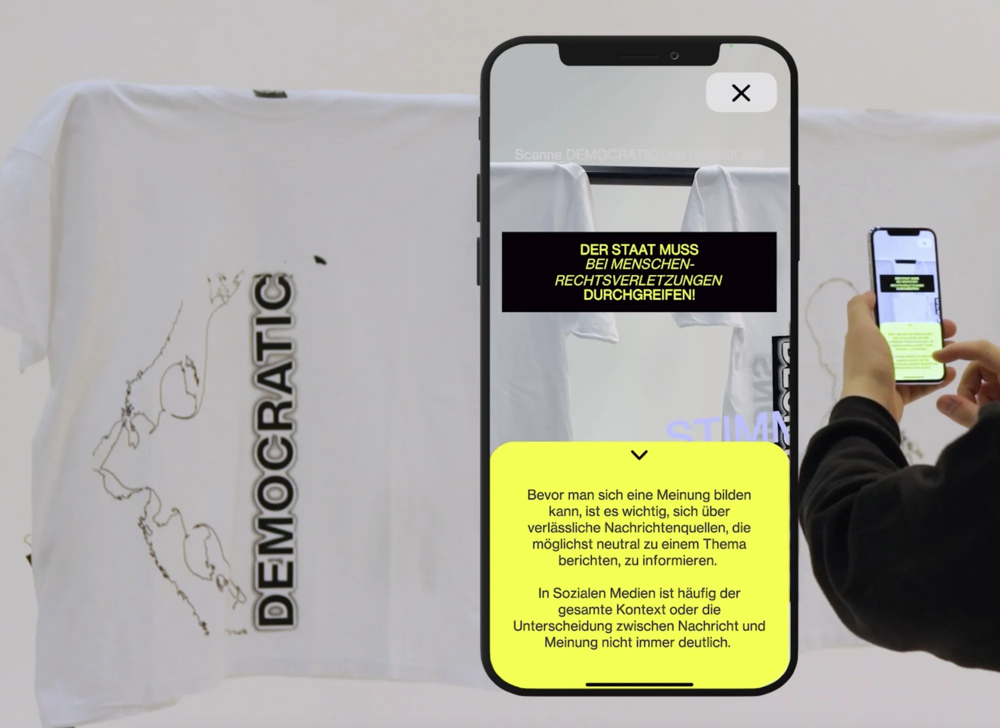
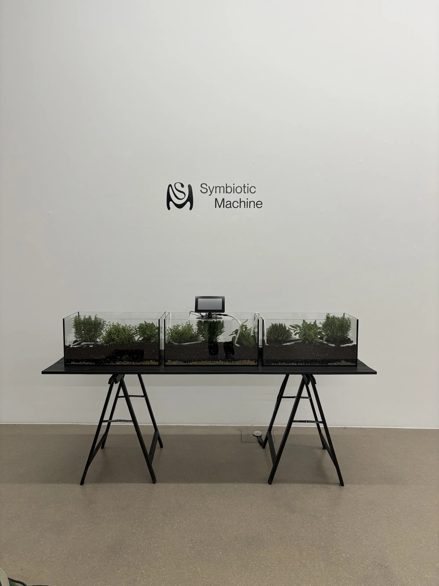
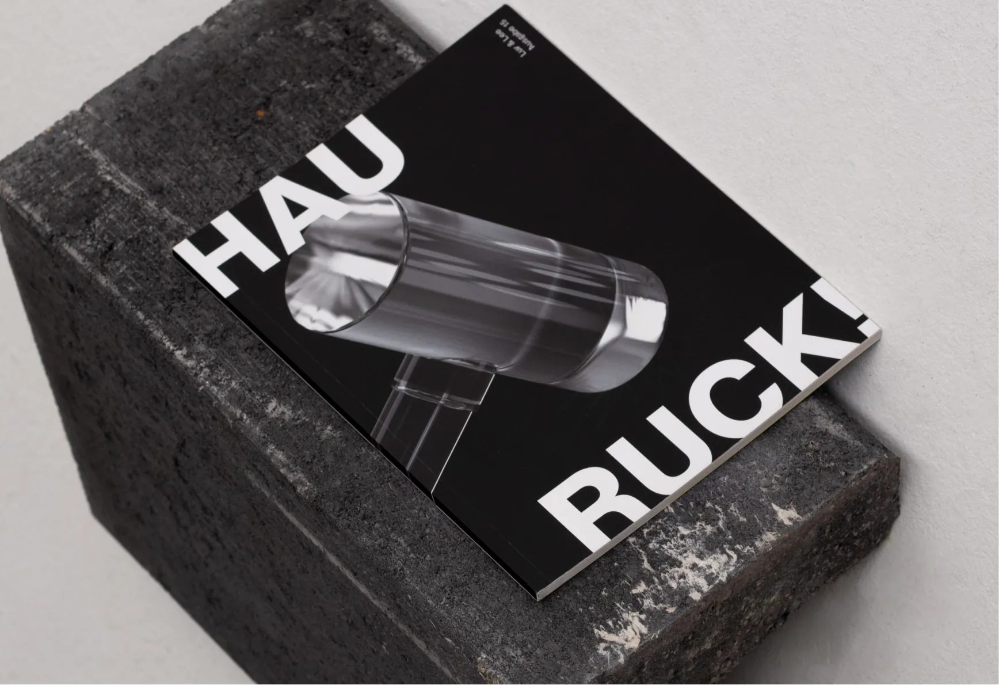
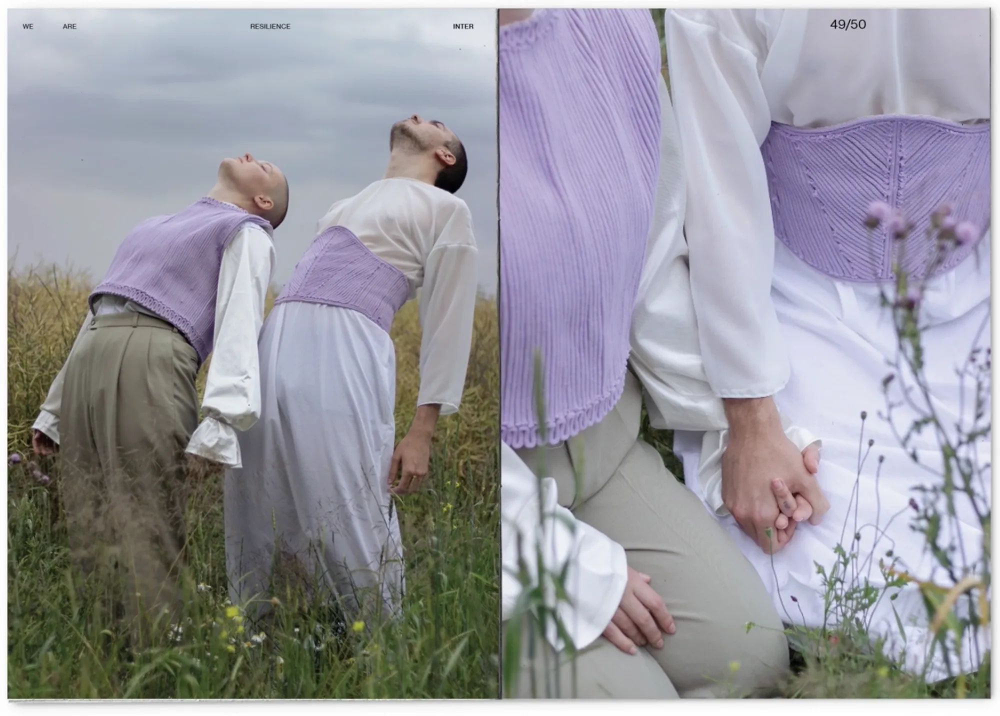

Skip to content
Felicitas Ferch
Index
About
Contact
Felicitas Ferch
01
equal matter
2025 – 2026
Installation & Exhibition
02
Human AI
2023 – 2025
Interface & Realtime
03
From Gesture to Object
since 2025
Material & Making
04
Flüchtige Formen
2025
Installation & Exhibition · Material & Making
05

Active Wear
2023
Interface & Realtime
06
DDW something.beyond
2026
Identity & Editorial
07

Symbiotic Machine
2025 – 2026
Material & Making
08

Luv & Lee
2020 – 2022
Identity & Editorial
09
Auratic Digitalism
2022 – 2023
Installation & Exhibition
10

inter
2021
Identity & Editorial
11
inside a server
2020 – 2021
Interface & Realtime